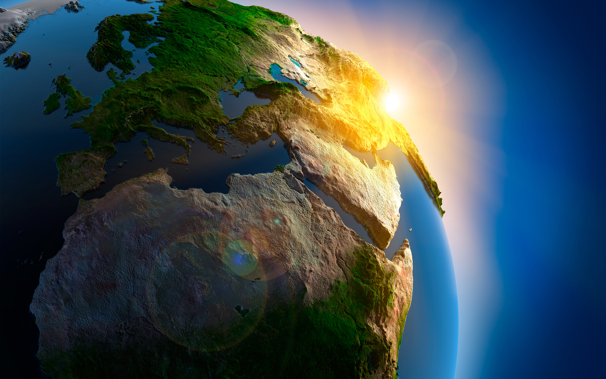

Зародження життя
Земля утворилася приблизно 4,54 млрд років тому із дископодібної протопланетарної хмари разом із іншими планетами Сонячної системи. Формування Землі в результаті акреції тривало 10—20 млн років. Спочатку Земля була повністю розплавленою, але поступово охолола, і на її поверхні утворилася тонка тверда оболонка — земна кора.

Незабаром після утворення Землі, приблизно 4,53 млрд років тому, утворився Місяць. Одна з сучасних теорій утворення єдиного природного супутника Землі стверджує, що це відбулося як наслідок зіткнення з масивним небесним тілом, яке отримало назву Тейя.
Первинна атмосфера Землі утворилася в результаті дегазації гірських порід та вулканічної активності. З атмосфери сконденсувалася вода, утворивши Світовий океан. Попри те, що Сонце на той час світило на 70 % слабше, ніж тепер, геологічні дані показують, що океан не замерз, що, можливо, пов'язано з парниковим ефектом. Приблизно 3,5 млрд років тому сформувалося магнітне поле Землі, що захистило її атмосферу від сонячного вітру.
Утворення Землі і початковий етап її розвитку (тривалістю приблизно 1,2 млрд років) належать до догеологічної історії. Абсолютний вік найдавніших гірських порід становить понад 3,5 млрд років і, починаючи з цього часу, веде відлік геологічна історія Землі, яка поділяється на два нерівні етапи: докембрій, що тривав приблизно 5/6 усього геологічного літочислення (близько 3 млрд років), і фанерозой, що охоплює останні 570 млн років. Близько 3-3,5 млрд років тому в результаті еволюції матерії на Землі виникло життя, почався розвиток біосфери — сукупності всіх живих організмів (так звана жива речовина Землі), яка суттєво вплинула на розвиток атмосфери, гідросфери й геосфери (принаймні в частині осадової оболонки). У результаті кисневої катастрофи діяльність живих організмів змінила склад атмосфери Землі, збагативши її киснем, що створило можливість для розвитку аеробних живих істот.
Новий фактор, що справляє могутній вплив на біосферу та навіть геосферу — діяльність людства, що з'явилося на Землі після появи (в результаті еволюції) людини менш ніж 3 млн років тому (єдності щодо датування цієї події не досягнуто й деякі дослідники нараховують 7 млн років). Відповідно, у процесі розвитку біосфери виділяють утворення й подальший розвиток ноосфери. Високий темп росту населення Землі (чисельність земного населення становила 275 млн у 1000 році, 1,6 млрд у 1900 році і більше 7 млрд чол. у 2012 році) і посилення впливу людського суспільства на природне середовище висунули проблеми раціонального використання всіх природних ресурсів і охорони природи.